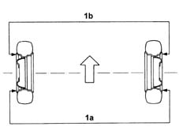
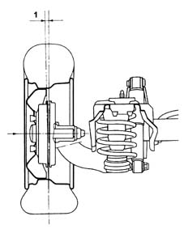

4450A40 rear wheel geometry - check using optical equipment
- Path
- Procedures > 44 SUSPENSION AND WHEELS > 4450 WHEELS AND HUBS > 4450A wheel geometry > 4450A40 rear wheel geometry - check using optical equipment
- Kind
- repair procedure (removal / refitting; the operation number is the code)
- Applies to
- all engines; all production periods
- Interactive page
- https://sloeber94.github.io/elrnDB-fMltpl/en/#/2891736
Applies to: all engines; all production periods
The rear wheel geometry should be checked after having subjected the components which affect the wheel geometry to the following checks:
- tyre inflation pressure;
- the eccentricity and the orthogonality of the wheel rims should not exceed 3 mm;
- wheel bearing end float;
Toe in check:
- Carry out the preliminary checks on the vehicle and remove any loads transported.
- Position the vehicle (in running order) on a lift with test equipment.
1. Check that the toe in (1a-1b) is within the recommended limits.
 | Measurement | Value | |
|---|---|---|---|
1 | Toe-in (mm) | 0.6 +\- 2 |

Applies to: all engines; all production periods
Camaber check:
Carry out the preliminary checks on the vehicle and remove any loads transported.
Position the vehicle (in running order) on a lift with test equipment.
1. Check that the rear wheel camber is within the recommended limits.
| Measurement | Value | |
|---|---|---|---|
1 | Camber (Gradi) | -47' ± 30' |
